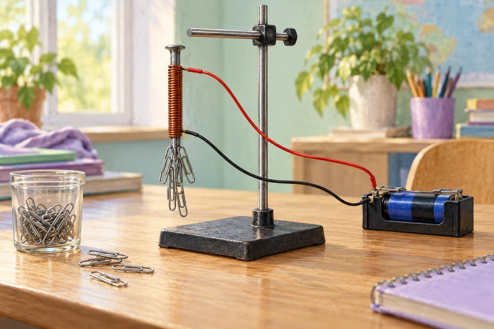

Zusatzaufgaben · Physik
Fermi-Aufgaben · Elektrischer Strom und Magnetismus
Wählt eine Aufgabe und entwickelt euren eigenen Lösungsweg.

Aufgabe 2 · Klasse 5/6
Wie viele Büroklammern hält der Elektromagnet?
Ein Elektromagnet im Fachraum wird mit einer Kleinspannungsquelle betrieben. Wie viele gewöhnliche Büroklammern kann er ungefähr gleichzeitig anheben?